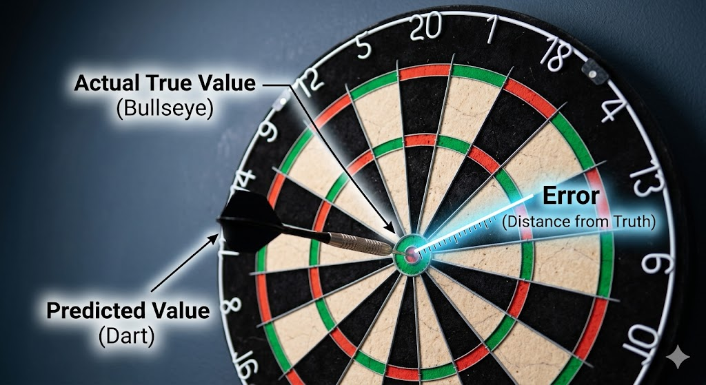

MEAN SQUARED ERROR ~The Objective Function

Hey learner!
If you are training an AI model, simulating a system, or just trying to draw a line of best fit through some data, MSE is one of the most common ways to measure how "wrong" your model is. Here is the concept broken down into simple words, going in reverse order:
1. Error (The Mistake)
Imagine you are throwing darts at a board. The bullseye is the actual true value, and where your dart lands is your prediction. The Error is simply the distance between your dart and the bullseye.
Math term: $$Actual\ Value - Predicted\ Value$$

2. Squared (The Punishment)
If we just added up all the errors, a prediction that was too high (+5) and a prediction that was too low (-5) would cancel each other out to zero, making it look like your model is perfect when it isn't. To fix this, we Square the error (multiply it by itself). This does two very important things:
- It makes everything positive: A -5 mistake becomes 25, and a +5 mistake also becomes 25. Nothing cancels out.
- It punishes big mistakes: A small error of 2 becomes 4. But a large error of 10 blows up to 100. This teaches the model that being a little bit wrong a lot of times is better than being massively wrong even once.
3. Mean (The Average)
Finally, you don't just throw one dart; you throw hundreds or thousands (your entire dataset). The Mean just means we add up all those Squared Errors and divide by the total number of darts thrown. This gives you a single number—the average punishment your model gets for being wrong.
The Goal in AI
When you hear about an AI model "training" or minimizing its "loss function," it often just means the computer is adjusting its internal math over and over again, trying to make that final MSE number as close to zero as possible.
To really see how this works, try adjusting the line of best fit in this interactive tool to get the lowest possible Mean Squared Error:
Interactive MSE Sandbox
Drag the white points or adjust the sliders to see how the penalty squares visually expand.
1. The Formal Mathematical Equation
Let's dive deep into the mathematical engine room of Mean Squared Error. When you move past the "dartboard" analogy, MSE becomes a beautifully elegant piece of statistics and calculus. In mathematical notation, the Mean Squared Error is defined as:
$$MSE = \frac{1}{n} \sum_{i=1}^{n} (y_i - \hat{y}_i)^2$$Where:
Total Samples
The total number of data points (samples) in your dataset.
The Summation
Sigma. It means "add up the following expression for every data point from the 1st (i=1) to the last (n)".
Actual Value
The true value of the i-th data point.
Predicted Value
The predicted value for the i-th data point (pronounced "y-hat").
2. The Deep Theory: Why do we Square it? (The Gaussian Connection)
You might wonder: Why square it? Why not just take the absolute value (which is called Mean Absolute Error, or MAE)?
The answer lies in a foundational statistical concept called Maximum Likelihood Estimation (MLE). Imagine you are trying to predict a value, but the real-world data is noisy. In nature, random noise or errors tend to follow a Normal Distribution (a Bell Curve), also known as Gaussian noise.
If you make the mathematical assumption that the errors in your data are normally distributed, and you ask the question, "What mathematical line is most likely to have generated this specific set of noisy data?", you have to maximize the Gaussian probability function:
$$P(\text{data} \mid \text{model}) = \prod_{i=1}^{n} \frac{1}{\sqrt{2\pi\sigma^2}} e^{-\frac{(y_i - \hat{y}_i)^2}{2\sigma^2}}$$To find the maximum of this complex probability function, mathematicians take the natural logarithm of it (because maximizing a logarithm is easier and yields the exact same peak). When you take the log, the complex exponential equation simplifies drastically. The constants drop away, the negative sign flips the problem from "maximizing" to "minimizing," and you are left with exactly one core term to minimize:
$$\sum_{i=1}^{n} (y_i - \hat{y}_i)^2$$The Theory Takeaway: Minimizing the Mean Squared Error is mathematically identical to finding the Maximum Likelihood Estimate under the assumption of Gaussian (normally distributed) noise. You are literally calculating the most mathematically probable truth.
Visualizing the Mathematics
To summarize these concepts, Data Scientist Greg Hogg provides an excellent visual breakdown contrasting Mean Squared Error against Mean Absolute Error, explaining exactly why MSE is vital for calculus-based optimization.
3. The Calculus: How AI Uses MSE to Learn
AI models learn using an algorithm called Gradient Descent. To use Gradient Descent, the loss function must be differentiable—meaning we need to be able to calculate its slope (derivative) at any point.
MSE is a smooth, continuous quadratic function. Because it squares the inputs, it forms a perfectly convex shape (like a physical bowl). This is a dream for calculus because a convex function is guaranteed to have only one absolute lowest point: the Global Minimum.
If we have a simple linear regression model where our prediction is :$$\hat{y}_i = mx_i + b$$ (where m is the weight and b is the bias), we substitute this into the MSE formula:
$$MSE = \frac{1}{n} \sum_{i=1}^{n} (y_i - (mx_i + b))^2$$To figure out how to update the model to make it better, the AI calculates the partial derivatives (the gradients) of the MSE with respect to the weight (m) and the bias (b) using the chain rule:
With respect to m:
$$\frac{\partial MSE}{\partial m} = \frac{-2}{n} \sum_{i=1}^{n} x_i(y_i - (mx_i + b))$$With respect to b:
$$\frac{\partial MSE}{\partial b} = \frac{-2}{n} \sum_{i=1}^{n} (y_i - (mx_i + b))$$The AI calculates these two gradients. If the gradient is positive, it means the error is going up, so the AI decreases its weights. If the gradient is negative, the error is going down, so it increases its weights. It takes tiny mathematical steps down the "bowl" until the derivative is exactly 0 —the bottom of the bowl, where the MSE is perfectly minimized.
4. The Statistical Decomposition: Bias-Variance Tradeoff
In advanced machine learning theory, the expected MSE of a model on unseen data can actually be broken down into three distinct theoretical components. This is known as the Bias-Variance Decomposition:
$$Expected\ MSE = Bias^2 + Variance + Irreducible\ Error$$- Bias: The error introduced by approximating a real-life problem (which may be highly complex) with a simpler model. A model with high bias pays little attention to the training data and oversimplifies (Underfitting).
- Variance: The error introduced by the model being too sensitive to tiny fluctuations or noise in the training data. A model with high variance memorizes the training data but fails on new data (Overfitting).
- Irreducible Error: The fundamental noise in the universe. No matter how perfect your model is, this error cannot be reduced which is represented by the : $$\sigma^2$$
At last, When training an AI, measuring the MSE isn't just about getting a low number on the training data; it's about balancing Bias and Variance so the MSE stays low when the AI is released into the real world !